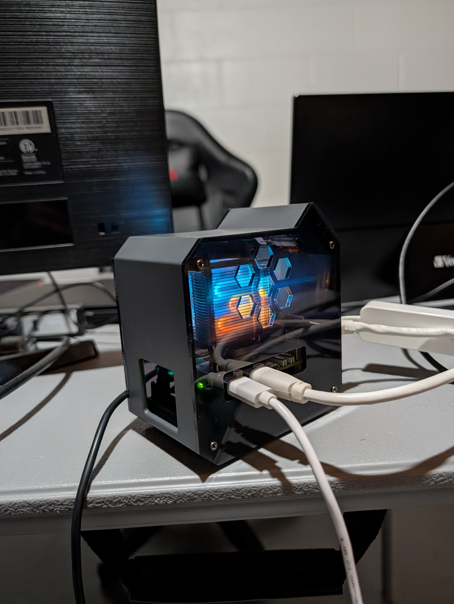

I wanted a router I actually controlled. No ISP firmware, no mystery settings, no waiting for someone else to patch a vulnerability. Just a Pi 5, an NVMe SSD, and OpenWrt doing exactly what I tell it to.
Here's how it went — including the parts that went sideways.
The hardware
| Component | Details |
|---|---|
| Single-board computer | Raspberry Pi 5 Model B |
| Storage | Inland TN320 238GB NVMe SSD |
| WAN interface | Built-in ethernet port (eth0) |
| LAN interface | USB ethernet adapter (eth1) |
| Flashing environment | MicroSD running Raspberry Pi OS |

The Pi 5 only has one built-in ethernet port, so the USB adapter handles LAN. eth0 faces the modem, eth1 faces everything else.
The approach
I booted Raspberry Pi OS from a microSD card, then used that as the base to flash OpenWrt onto the NVMe. I grabbed the OpenWrt image for the Pi 5 directly from the OpenWrt downloads page in a browser, then used Raspberry Pi Imager to flash it straight to the NVMe.
In Raspberry Pi Imager:
- Device: Raspberry Pi 5
- OS: Use custom image → selected the downloaded OpenWrt
.imgfile - Storage: the NVMe drive
Clicked Write, waited for it to finish and verify, then removed the microSD and powered on. OpenWrt booted clean off the NVMe.

Configuring WAN and LAN
OpenWrt's default config puts eth0 in a LAN bridge with no WAN interface at all. Fresh out of the box it has no internet. With a USB ethernet adapter in the mix, the fix is to reassign the interfaces properly.
/etc/config/network by hand. I tried that on an earlier attempt and ended up with a corrupted config that wouldn't boot. Always use UCI.
uci set network.@device[0].ports='eth1'
uci set network.wan=interface
uci set network.wan.device='eth0'
uci set network.wan.proto='dhcp'
uci commit network
service network restarteth0 faces the modem as WAN. eth1 (USB adapter) serves LAN devices. After a restart, internet was working. Rebooted to confirm it survived — it did.
WiFi
The Pi 5 uses a Cypress CYW43455 chip. The firmware isn't included in a fresh OpenWrt flash so you have to install it manually:
apk add kmod-brcmfmac brcmfmac-firmware-43455-sdio \
brcmfmac-nvram-43455-sdio wpad-basic-mbedtls
modprobe brcmfmac
ip link set wlan0 upThen configure the access point:
uci delete wireless.default_radio0
uci set wireless.default_radio0=wifi-iface
uci set wireless.default_radio0.device='radio0'
uci set wireless.default_radio0.mode='ap'
uci set wireless.default_radio0.ssid='YourSSID'
uci set wireless.default_radio0.encryption='psk2'
uci set wireless.default_radio0.key='YourPassword'
uci set wireless.default_radio0.network='lan'
uci set wireless.radio0.htmode='HT20'
uci commit wireless
wifi down && wifi uphtmode='HT20' line is critical. The default is VHT80 which is a 5GHz setting. On 2.4GHz it causes the interface to come up but never actually broadcast. Took me longer than I'd like to admit to figure that one out.
Rebooted again. WiFi came back up. Moving on.
AdGuard Home
Installed AdGuard for network-wide ad and tracker blocking. The key detail — don't disable dnsmasq. Keep it running on port 53 for DHCP and forward DNS queries to AdGuard on a different port instead:
apk add adguardhome
service adguardhome enable
service adguardhome startAccess the AdGuard web setup from your browser on the router's LAN IP at port 3000. During setup, assign DNS to a port other than 53 since dnsmasq is already using it. Then wire dnsmasq to forward to AdGuard:
uci add_list dhcp.@dnsmasq[0].server='127.0.0.1#YOUR_ADGUARD_PORT'
uci set dhcp.@dnsmasq[0].noresolv='1'
uci commit dhcp
service dnsmasq restartBlocklists running: OISD Full and HaGeZi Multi Pro. Blocking well over 100,000 domains across every device on the network — no client-side installs needed. Rebooted. AdGuard came back up and was still intercepting DNS queries. Good.
Reboot testing
I rebooted after every major change before moving on. This sounds obvious but I only started doing it after a failed VLAN experiment took down my live router and required a full reflash to recover. One bad UCI command and your network is gone. Reboot early, reboot often.
What I'd do differently
Use Raspberry Pi Imager from the start. Flash OpenWrt to the NVMe from Pi OS on a microSD, pull the card, boot OpenWrt. Clean every time. I wasted hours trying to fix a broken bootloader when a five minute reflash would have solved everything.
Use UCI for everything. Never touch the config files directly. I corrupted my network config twice by editing files manually. UCI exists for a reason.
Reboot test after every single change. Not once at the end — after every step.
Test new features on a second Pi before touching the production router. The VLAN attempt that bricked my live router would have been harmless if I had tried it on a spare first. Anything that touches networking should be validated on a sacrificial device first.
Current state
Router is running solid. Surviving reboots, serving WiFi, blocking ads network-wide. Total cost was the Pi 5 and NVMe — the software is all free and open source.
Next up: WireGuard VPN and VLAN segmentation for IoT devices — both getting tested on a second Pi before they go anywhere near the live router.